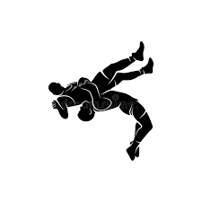
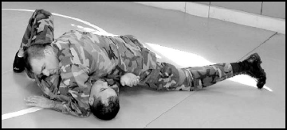
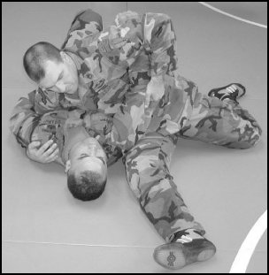

Home |
Karate |
Muai Thai |
Box  |
Grappling |
Почитать об этом всём на внешнем ресурсе
|
Grappling |
Почитать об этом всём на внешнем ресурсе
Grappling => 
Типы позиций
Весовые категории
| Позиция на груди |  |
| Позиция на боку |  |
в начало
Типы позиций
- гард
- полугард
- удержание сбоку
- удержание со спины
- удержание верхом
- удержание со стороны головы
Весовые категории согласно международной федерации
- от 45.5 до 47.7 Mini Flyweight
- от 47.7 до 49.0 Light Flyweight
- от 49.0 до 50.8 Flyweight
- от 50.8 до 52.2 Super Flyweight
- от 52.2 до 53.5 Bantamweight
- от 53.5 до 55.3 Super Bantamweight
- от 55.3 до 57.2 Featherweight